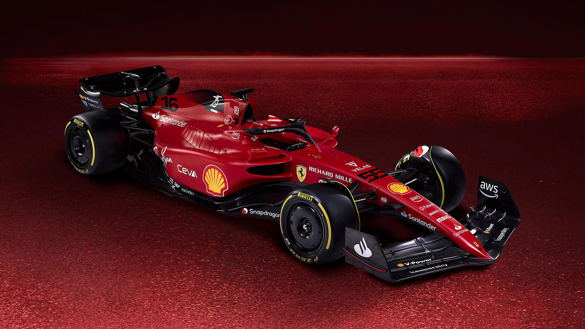
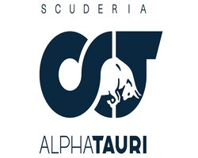
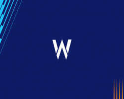

Red Bull Racing

Red Bull Racing es un equipo austriaco con sede en Inglaterra, los inicios de la escuderia remontan
al 1997 fundado por Jackie Stewart. El equipo cuenta hasta el momento con 5 campeonatos mundiales.
Pilotos destacados: Sebastian Vettel, Max Verstappen, Mark Webber, Daniel Ricciardo, Sergio Perez.
Mercedes
Mercedes-Benz es una de las automotrices más exitosas de la Fórmula 1, considerada uno de los cuatro
equipos con mejores resultados, junto con Williams, Ferrari y McLaren. Participó inicialmente como
constructor en Fórmula 1 en 1954 y 1955, y volvió a hacerlo desde 2010 hasta la actualidad. El
equipo alemán ganó ocho Campeonatos de Constructores de forma consecutiva (de 2014 a 2021).
Pilotos destacados: Lewis Hamilton, Nico Rosberg, Juan M. Fangio, Valteri Bottas.
Ferrari

La primera participación de Ferrari en Fórmula 1 fue en el Gran Premio de Mónaco de 1950, con el Tipo
125 F1. Ferrari es considerado uno de los cuatro grandes equipos de Fórmula 1, junto con Williams,
McLaren y Mercedes.Es el equipo activo más antiguo del campeonato, y es el que ha conseguido más
victorias, campeonatos de pilotos (15) y campeonatos de constructores (16).
Pilotos destacados: Michael Schumacher, Niki Lauda, Alain Prost, Carlos Reutemann.
Mclaren


McLaren, es una escudería británica de automovilismo con sede en Woking, fundada en 1963 por Bruce
McLaren. A lo largo de los años ha obtenido 8 Campeonatos de Constructores (tercera en el
historial), 12 Campeonatos de Pilotos (segunda), 183 victorias (segunda), 155 poles (segunda) y 489
podios (segunda).
Pilotos destacados:
Aston Martin

Aston Martin es una escudería británica de Fórmula 1 que a finales de 2020 regresó a la parrilla,
gracias a que Lawrence Stroll invirtió en Aston Martin £182 millones de libras, lo cual le
proporcionó el 20 % de las acciones del fabricante, con tal movimiento decide usar la imagen de
Aston Martin para convertir a partir de 2021 al equipo Racing Point en Aston Martin F1 Team.
Actualmente tiene su base en Silverstone, Reino Unido
Pilotos destacados: Sebastian Vettel, Fernando Alonso(2023), Lance Stroll, Niko Hulkenberg.
AlphaTauri

Scuderia AlphaTauri, más conocida simplemente como AlphaTauri, es una escudería italiana de Fórmula
1, propiedad de la empresa Red Bull. El constructor fue renombrado para el año 2020 de Toro Rosso a
AlphaTauri para promocionar a la empresa de ropa del mismo nombre.
Pilotos destacados: Sebastian Vettel, Piere Gasly, Yuki Tsunouda, Dani Kvyat.
Williams


Williams Grand Prix Engineering Limited, comúnmente conocido como Williams Racing, es un equipo de
Fórmula 1 creado en 1977 por Frank Williams y Patrick Head. Williams es considerado uno de los
cuatro grandes equipos de Fórmula 1, junto con Ferrari, McLaren y Mercedes. La primera carrera de la
escudería fue en el Gran Premio de España de 1977, cuando el equipo corrió con un chasis March y
Patrick Nève como piloto.
Pilotos destacados: Alan Jones, Alain Prost, Damon Hill, Nelson Piquet.
Alfa Romeo

Alfa Romeo ha participado como una escudería de Fórmula 1 en diferentes periodos. Antes de su retorno
como equipo constructor en 2019, tras renombrar la estructura de Sauber y asumir la licencia suiza,
participó en los campeonatos de las temporadas 1950, 1951 y entre 1979 y 1985 como escudería
italiana.
Pilotos destacados: Giuseppe Campari, Ugo Sivocci, Antonio Ascari, Valteri Bottas.
Haas
Haas F1 Team, anteriormente conocido bajo el nombre de Haas Racing Developments, es un equipo
estadounidense de carreras de Fórmula 1 construido por el empresario y copropietario del equipo
Stewart-Haas Racing de la NASCAR Sprint Cup Series, Gene Haas, tras tener la propuesta de Guenther
Steiner y que fue fundado y aprobada su entrada por la comisión de la FIA y por Bernie Ecclestone en
el mes de abril de 2014. El equipo debutó en la temporada 2016.
Pilotos destacados: Romain Grosjean, Mick Schumacher, Kevin Magnussen.
Alpine

Alpine F1 Team (por motivos de patrocinio BWT Alpine F1 Team), es una escudería francesa de Fórmula
1 con sede en Reino Unido y propiedad del Grupo Renault, que hizo su debut en la temporada 2021.
Reemplazó a Renault para promocionar a Automobiles Alpine.
Pilotos destacados: Fernando Alonso, Esteban Ocon, Dani Kvyat, Jordan King.